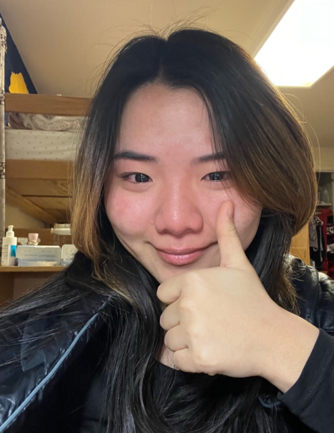

Kaylene Son
Media Studies Major / 1st year
Hi! My name is Kaylene and I have absolutely no idea how to code! I hope I'm not doing this wrong LOL ;0 In my free time I like to draw, like cat pics, watch tik toks, and hang out with friends. Here are some of the cool places I like to eat at in Berkeley:
- Thai Table
- Sweet Green
- Cafe 3 (lowkey tho)

fontsinuse
Reading Responses
- Something I learned from this article was that oftentimes certain choices we make as users of specific apps or websites were predicted. Our eyes meet certain corners, bold text, and highlighted areas first so that we can interact easily as it was designed to be.
- My favorite part of this article was when they showed the breakdown of Twitter's UI. I think it says a lot about how and where we choose to interact with interfaces and the thought process behind it.
- A quote I found interesting: "You develop your design eye by thinking as if you were the designer of a product."
- I give this article a 7.6/10